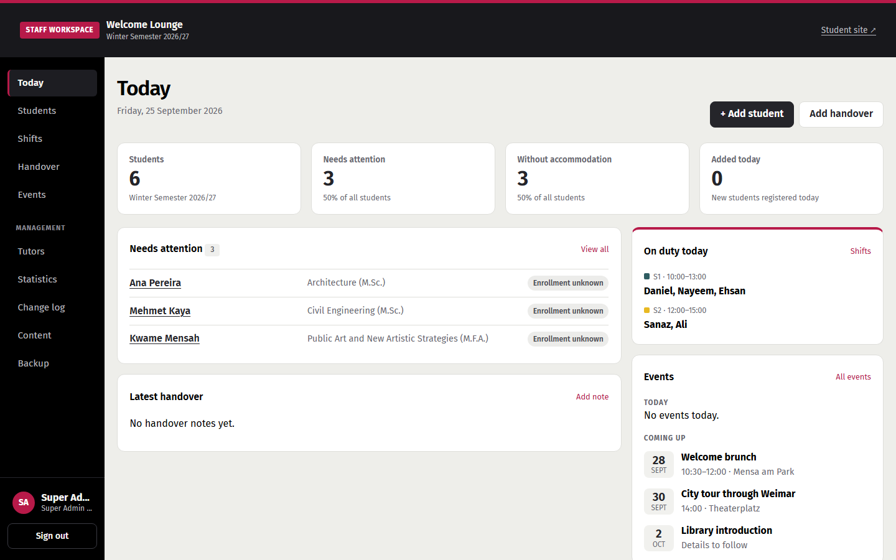
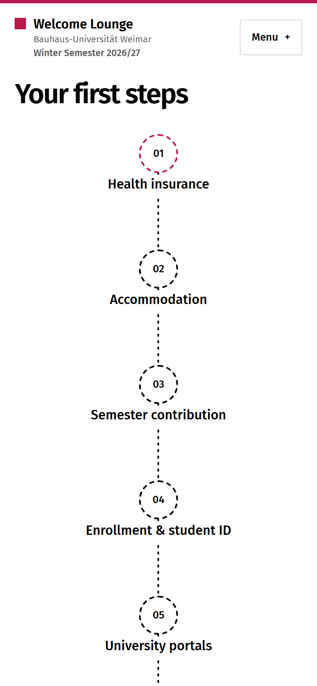
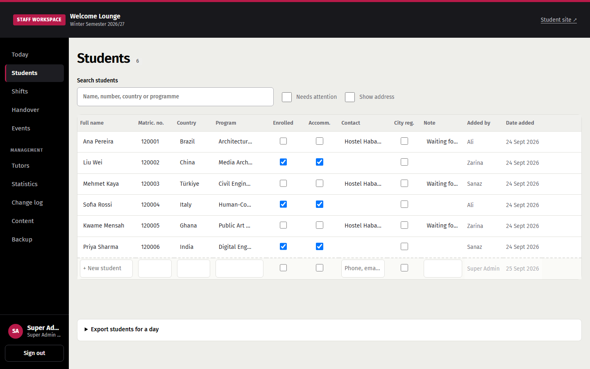
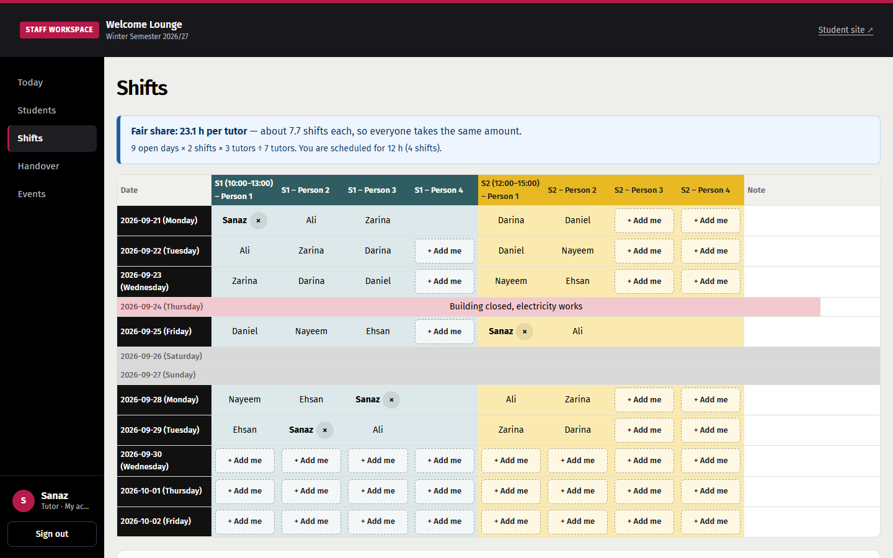
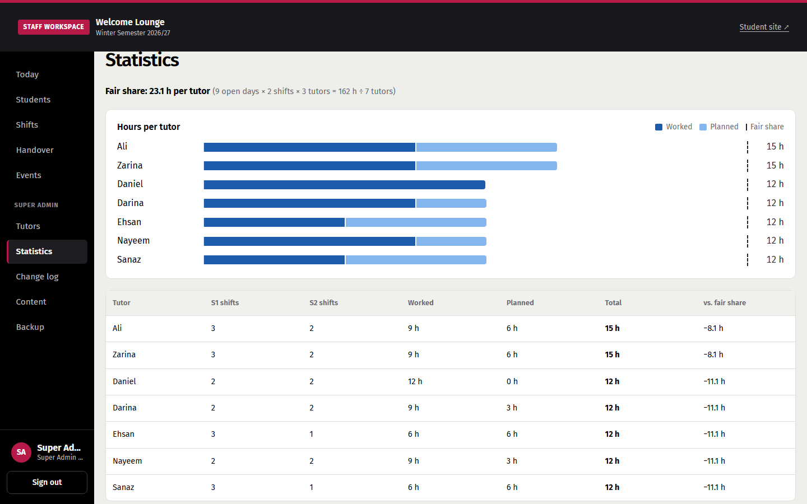
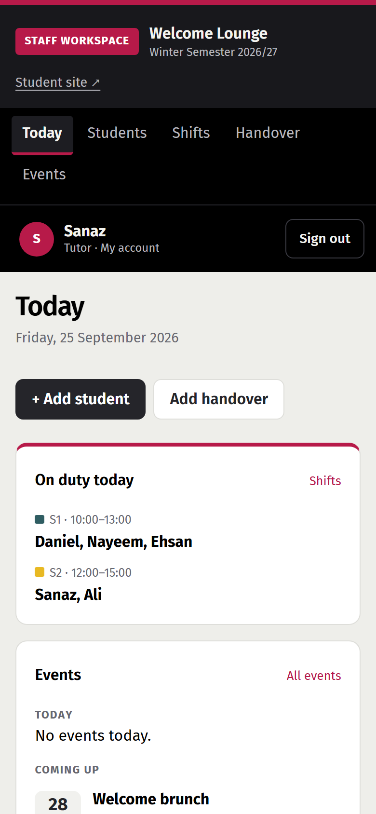
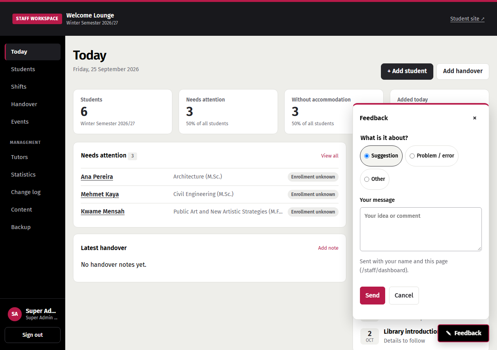

Incoming students
Often before they arrive
- Need
- Know the next step and reach the official answer quickly, on a phone
- Constraint
- No account, no tracking
I work as a tutor in the Welcome Lounge at Bauhaus-Universität Weimar. From that desk, I saw where arrival information and the team's own coordination broke down. I turned what I saw into requirements and built a student journey and a staff workspace around the spreadsheet the team already trusted.


01The situation
Every semester, international students arrive in Weimar and work through the same list: health insurance, a room, the semester fee, enrolment, city registration, a bank account, a residence permit. The university publishes all of it, across many pages, PDFs and a WhatsApp group.
The Welcome Lounge tutors fill the gaps in person, while keeping their own work in an Excel file, a shift sheet and chat.
Often before they arrive
Tutors, coordinators and admins
02Discovery
The project started from my own shifts at the desk. That gave me direct access, but my view could be mistaken for the team's, so I checked it with the other tutors.
How strong is this? Directional, not representative. It shaped priorities; it does not prove outcomes. What came up is traced in the rows below.
03From evidence to requirements
Each row runs from what I saw or was told to what I built. Sources are marked.
04Designing the workflow
I first explored a home page with recommendations and event promotions, then cut it back to the journey alone. Every extra panel competed with the next step.
The team works fast in Excel and needed to see who changed what. So the table behaves like a sheet, and attribution costs nobody any typing.



Open days are weekdays in the semester period, plus any weekend day with someone scheduled. Closed days don't count.
There is no IT department to manage accounts, so every permission follows from someone's place on one ladder.
| Role | Can do |
|---|---|
| Tutor | Students, own shifts, events, handover |
| Coordinator | + tutor list, staff list, semester setup, settings, statistics, change log, content, data import, backup |
| Admin | + tutor and coordinator logins |
| Super Admin | Everything, including Admin logins. Exactly one. |
No quiet promotions. Nobody can give anyone, including themselves, a role above their own. I found this gap while designing the ladder: a coordinator could have raised their own role and then set a personal login.

05Building with constraints
The easy story would be “the old tools are bad, replace them.” The evidence said the team trusted its Excel file. So I kept it and built the interaction layer around it.
I built both front doors in one codebase. The browser never talks to Nextcloud directly: a small Node API reads and writes the workbook and checks every staff request against the signed-in role.
06Iteration
Requests from the team during the pilot. I decided how to respond and shipped each change, usually within hours. Most changes removed things.

07When things broke
During the pilot, edits to the workbook stopped showing up on the site. I traced it layer by layer:
Section column) made the whole workbook fail validation.What I changed: the server now keeps serving the last valid workbook it has loaded instead of dropping to sample steps (a freshly started server with nothing loaded still falls back to them), and admins see the exact validation message, such as “Content row 4: choose First Step, Useful Info, …”. The fix was mostly about making the system's state readable to the person responsible for it.
A sign-in that crashed for one role only. After I added the Super Admin login, a correct password returned a server error. I reproduced it live, traced it to a helper used before it was defined, and fixed the order. Then I added the missing test and confirmed it fails on the old code and passes on the new.
The lesson: the tutor path had a test and the new role didn't. Every role's sign-in is now tested; tutor and Super Admin through the full API.
08Status
Building something is not the same as showing that it helps.
No task-based testing with tutors or students so far. I can't yet say whether the tool makes their work easier.
No comparison with the old spreadsheet and chat workflow exists, so there is no evidence of time saved or fewer repeated questions.
Time tutors on real tasks against the old workflow.
Do incoming students reach the right official page without asking?
WCAG 2.1 AA, including screen readers on the map and tables.
University single sign-on before the next semester's handover.
09Reflection
Keep: the most useful decision was not a screen. It was keeping Excel as the source of truth. It lowered the risk for the team, gave them a way out, and turned each new feature into a question of presentation instead of migration.
Keep: letting real use drive removals. “We don't need this” was worth more than any feature request.
Change: I would run the tutor survey before building the staff workspace, not after. Being on the team gave me a head start, but some early decisions rested on my own view of the work.
The hardest calls were about what not to build: no new database, no student accounts, no replacement for the Excel file the team already trusted. The engineering went into making that one file safe to share, and the design into making its state readable to the people who rely on it.